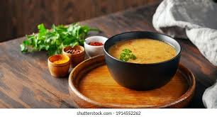

Dal
Dal-Common Indian Lentil

Ingredients:
- 75 gram of Red Lentil Pulses (Masoor Dal)
- 25 grams og Pigeon Peas (Toor Dal)
- 1 teaspoon of Turmeric
- 1/2 teaspoon of Salt
- 500 ml of Water
- 4-5 cloves of Garlic
- 2-4 Chillies
- 1 an Onion
- 5 teaspoon of Oil
- 2 pan
Instructions:
- On high flame, put the Red Lentil Pulses with Pigeon Peas in Pan with 200ml Water till it's boiled(5 minutes at most)
- Lower the flame, add Turmeric and let it cook by cover it till it becomes soft, creamy and disolved(30 minutes at most)
- After it becomes soft, creamy and disolved , add rest of remaining Water with Salt and cooking it openly in high flames(5 minutes at most)
- Take different Pan in medium flame, add 5 teaspoon of Oil, let the oil boil and add small pieces of those chopped Garlic cloves until its half cooked, light brown(2 minutes at most)
- When it's half fried, add small pieces of chooped Onion and small chopped pieces of Chillies in temperant fries, let it cooked till it's golden brown (3 minutes at most)
- When it's golden brown, pour the cooked lentil in temperent fries and let the cooked lentil boil in high flame so it gets mixed naturally with the temperent fries(5 minutes at most)
- Your Dal - Simple Indian Lentil is ready for serving and eating! with Bhaat, Roti and Bhaaji
Enjoy Your Dal with other "Desi-Khana"